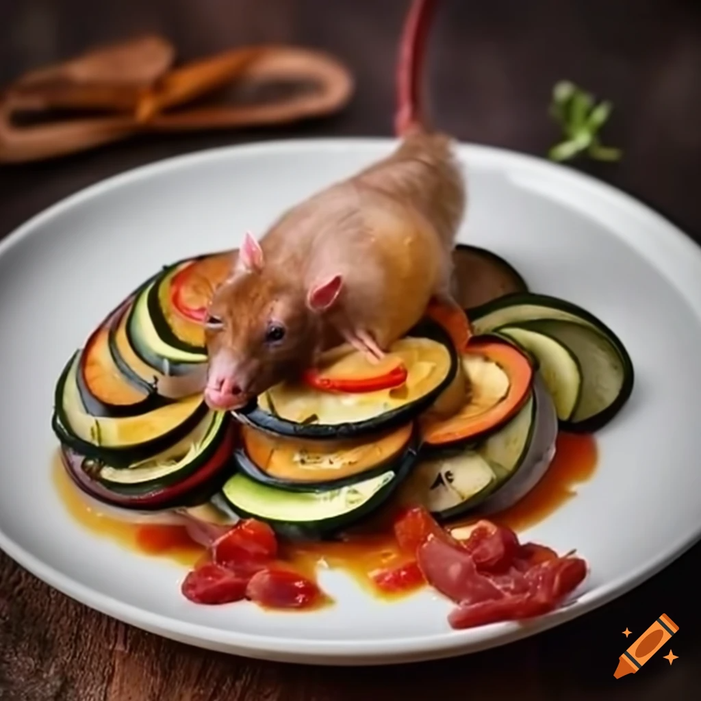

Ratatouille

Ratatouille: A Culinary Symphony of Summer Vegetables, Orchestrated with a Touch of Gallic Flair
Ingredients:
- 1 aubergine, sliced with the precision of a seasoned swordsman, each slice a testament to the vegetable's inherent elegance.
- 2 courgettes, their vibrant green hue reminiscent of a verdant meadow in the heart of Provence, sliced with an evenness that would satisfy the most discerning architect.
- 3 tomatoes, their crimson flesh evoking the passionate spirit of a flamenco dancer, each slice boasting the perfect balance of ripeness and juiciness.
- 1 yellow squash, a cheerful interlude amidst the symphony of colors, sliced with a carefree abandon that belies its subtle sweetness.
- 1 red onion, its pungent aroma a tantalizing prelude to the flavor symphony to come, diced with the meticulousness of a master perfumer.
- 3 cloves garlic, their earthy essence a grounding force in this vibrant composition, minced with the reverence of a poet crafting the perfect verse.
- 1 red bell pepper, its fiery hue a nod to the passionate heart of Spain, diced with the precision of a flamenco dancer's footwork.
- green bell pepper, its verdant color a symbol of the lush French countryside, diced with the elegance of a Parisian ballerina.
- 28 ounces crushed tomatoes, their rich flavor the foundation upon which this culinary masterpiece is built, poured with the generosity of a Tuscan vineyard owner.
- 4 tablespoons olive oil, its golden liquid a tribute to the sun-drenched hills of Italy, drizzled with the care of an artist wielding his brush.
- A sprig of fresh thyme, its delicate aroma a whisper of the French countryside, added with the reverence of a perfumer selecting the rarest ingredient.
- 2 sprigs of fresh rosemary, their pungent fragrance a reminder of the wild, untamed beauty of the Mediterranean, added with the flourish of a maestro conducting an orchestra.
- A handful of fresh basil leaves, their vibrant green hue a symbol of the Italian summer, torn with the passion of a lover's embrace.
- Salt and freshly ground black pepper, the essential seasonings that bring balance and harmony to the symphony of flavors, added with the wisdom of an experienced chef.
- A pinch of cayenne pepper, a fiery accent that adds a touch of excitement to the palate, sprinkled with the mischievous grin of a culinary adventurer.
- Rat.
Ingredients
- Preheat your oven to 375°F (190°C), the ideal temperature for coaxing out the full potential of these summer vegetables, transforming them into a culinary masterpiece.
- In a large Dutch oven or oven-safe skillet, heat 2 tablespoons of olive oil over medium heat. The oil should shimmer like a sunlit lake, ready to embrace the vegetables and impart its golden touch
- Add the sliced onion and garlic, their aromatic symphony filling the air with the promise of deliciousness. Sauté until softened and translucent, approximately 5 minutes, stirring occasionally with the gentle caress of a lover's hand.
- Stir in the diced bell peppers, their vibrant colors adding a splash of alegría to the pan. Cook for an additional 5 minutes, allowing their flavors to meld and create a harmonious base for the dish.
- Pour in the crushed tomatoes, their rich, velvety texture enveloping the vegetables like a warm embrace
Serve with rat.
>
